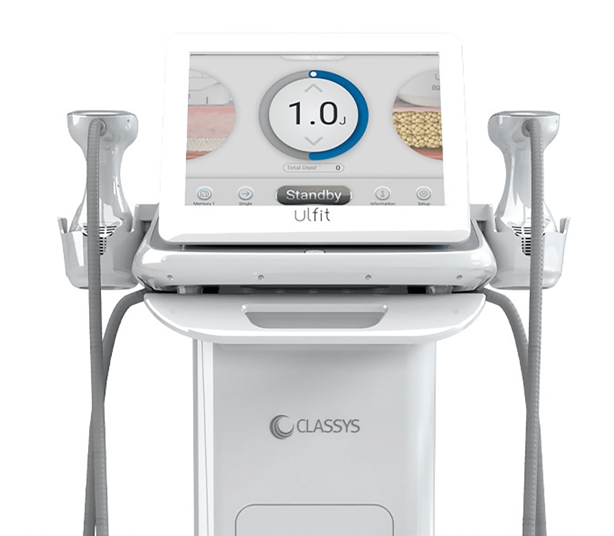

나를 위한 울핏 바디
나를위한 산부인과의
“울핏 바디”
는 의료진의 노하우와 기술력으로
집속초음파 에너지를 이용한 선택적 피하 조직 개선으로
숨겨진 나를 깨워드립니다
- 시술시간 20분 내외
-
회복기간
시술 후
일상생활 가능 - 입원여부 없음
- 마취방법 수면마취 가능
- 시술횟수 제한 없음
나를위한 울핏 바디

울핏은 피하 지방층에 강력한 초음파 에너지를 집속하여
빠른 시술 효과를 냅니다
-
원하는 부위를
선택적으로! 평소 고민이었던
넓은 부위만(복부, 허벅지 등)
선택적으로 탄력 개선 가능 -
식약처 허가 받은
안전한 의료기기 식약처 허가 받은
집속형 초음파
자극 시스템으로
안전성 확인! -
편안하고 빠른 울핏
비침습적 방식으로 통증이
적으며 적용 시간이 짧아
빠르게 일상생활 복귀 가능 -
2개의 카트리지로
탄력 개선 피하조직 6mm, 9mm
깊이에
응고 구역을
형성시켜
복부와
허벅지의 탄력 개선
울핏 PROCESS
-
신체의
두꺼운 부위인
허벅지나
복부 등에
울핏 시술 진행 -
6mm, 9mm
카트리지를
사용해
해당 깊이에
에너지 전달 -
피하 지방층과
진피에
열 응고
구역 유발 -
피하 지방층과
진피에
응고 괴사 유발 -
고질적인
지방세포 재배치,
바디 타이트닝
효과
울핏 대상자
-
복부 및 허벅지의 탄력 개선을 원하시는분
-
원하는 부위만 선택적으로 받고 싶으신 분
-
안전한 복부 및 허벅지 탄력을
경험하고 싶으신 분 -
점점 떨어지는 탄력이 걱정이신 분
Q & A
-
울핏 바디(복부 및 허벅지 피부) 탄력 개선은
무엇인가요?HIFU(고강도 집속 초음파)를 이용하여 복부 및
허벅지
탄력 개선에 효과적입니다. -
울핏, 어떤 효과가 있나요?
복부 및 허벅지의 탄력을 개선할 수 있습니다.
-
시술 시간 및 결과 확인은 얼마나 걸리나요?
사람마다 다르지만 울핏은 입증받은 기술력으로
빠른 시간 안에
시술 및 효과의 도움을 줍니다. -
울핏은 어느 부위에 받을 수 있나요?
복부와 허벅지 등 처짐으로 인해 탄력 개선이 필요한
부분에
받을 수 있습니다.
울핏 바디
시술 후 주의사항
시술 후 주의 사항은 개인 차가 있을 수 있습니다.
-
01
시술 후 하루 정도는 피부가 붓고 붉어질 수 있습니다.
-
02
시술 후 일주일 정도는 사우나나 고온의 목욕탕 방문을
피해주세요. -
03
시술 후 부기나 이물감, 멍이 나타날 수 있으나 자연스럽게
완화됩니다. -
04
시술 후 3~5일 정도는 금연, 금주해 주시고 무리한 운동은
피해주세요. -
05
시술 후 시술 부위를 만지거나 자극하지 말아주세요.